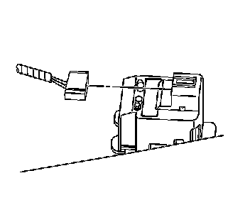
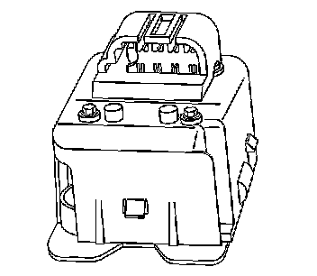

Inside Air Temperature Sensor Assembly Replacement
INSIDE AIR TEMPERATURE SENSOR ASSEMBLY REPLACEMENT
REMOVAL PROCEDURE
1. Remove the left windshield garnish molding.
2. Remove the left center pillar assist handle.
3. Remove the center pillar garnish molding.
4. Remove the left sunshade.
5. Gently pull down the headliner.

6. Disconnect the electrical connector from the inside air temperature sensor.
7. Partially remove the inside air temperature sensor from the headliner.
8. Remove the sensor grille from the inside air temperature sensor.

9. Remove the inside air temperature sensor from the headliner.
INSTALLATION PROCEDURE
1. Install the new sensor grille to the headliner.
2. Install the inside air temperature sensor to the headliner and sensor grille.
3. Connect the electrical connector to the inside air temperature sensor.
4. Install the left sunshade.
5. Install the left center pillar garnish molding.
6. Install the left center assist handle.
7. Install the left windshield garnish molding.